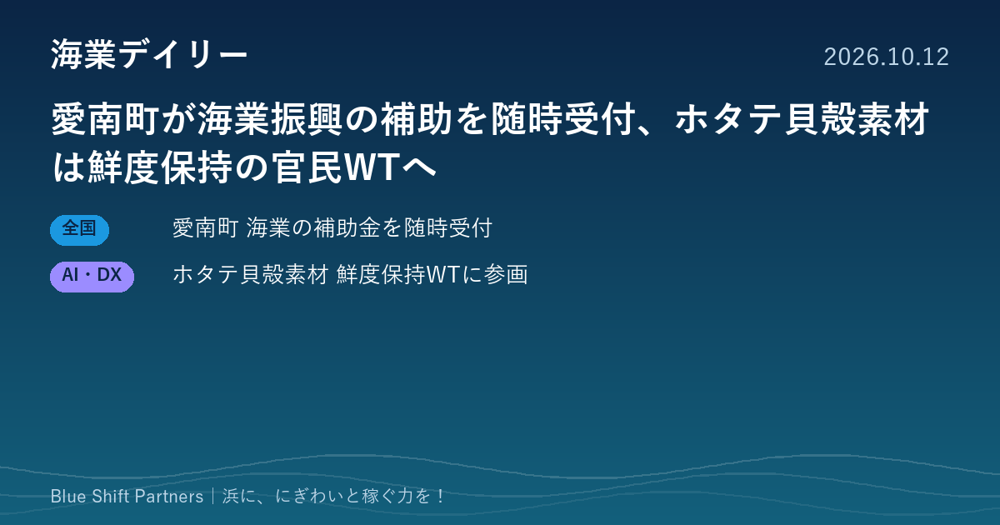

2026.10.12
愛南町が海業振興の補助を随時受付、ホタテ貝殻素材は鮮度保持の官民WTへ

本日は2件をお届けします。町を挙げて海業に取り組む愛媛県愛南町の支援制度と、水産の副産物であるホタテ貝殻を食品の鮮度保持に生かそうとする企業の動きです。
愛媛県愛南町、海業振興事業支援補助金を令和9年2月26日まで随時受付
愛媛県愛南町は、町の海業のページを10月6日に更新し、海業振興事業支援補助金の案内を掲載しています。町内に事務所を置く法人や町内で活動する団体が、町の指定する期間に行う海業振興事業の経費が対象です。公募期間は令和9年2月26日までで、先着順に随時審査し、予算額に達した時点で終了します。町は令和8年4月に水産課と海業推進室を「海業振興課」に改め、多業種の関係者による海業推進会議も続けています。
ここがポイント：補助金に加えて、推進会議やグランドデザインで町ぐるみの体制を整えている点は、これから海業を本格化させる自治体の参考になります。予算到達で締め切られるため、町内の事業者は早めの相談が有利です。
出典：愛南町「海業（うみぎょう：UMIGYO）についてお知らせします」（2026-10-06）
北海道産ホタテ貝殻由来の素材「SeaFect」、農水省所管の官民協議会で鮮度保持の検討へ
東京都大田区の株式会社Shelltasは10月9日、北海道産ホタテ貝殻からつくる粉末状のカルシウム素材「SeaFect」について、農林水産省が所管するフードテック官民協議会の鮮度保持技術ワーキングチームに参画したと発表しました。食品メーカーや包装、物流、研究機関と連携し、食品分野での活用を進めるとしています。同社は既存の鮮度保持技術を置き換えるのではなく、組み合わせて使う素材と位置づけています。
ここがポイント：処理に困りがちな貝殻などの水産副産物が、技術次第で新しい価値を生む素材になる例です。産地の副産物を地域の収益につなげる発想として、漁協や加工業者にも参考になります。
出典：株式会社Shelltas プレスリリース（PR TIMES）（2026-10-09）
愛南町のように、組織の名前に「海業」を掲げ、会議と補助金を両輪で回す自治体が出てきています。貝殻のような副産物も含め、浜にあるものを一つずつ稼ぐ力に変えていく積み重ねが、地域の底力になります。